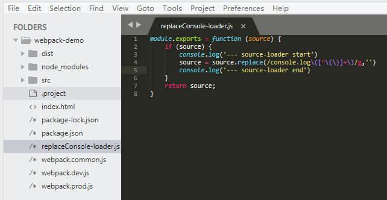
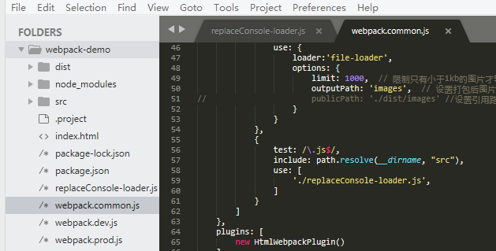
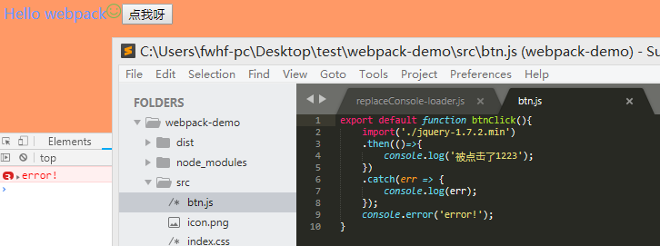
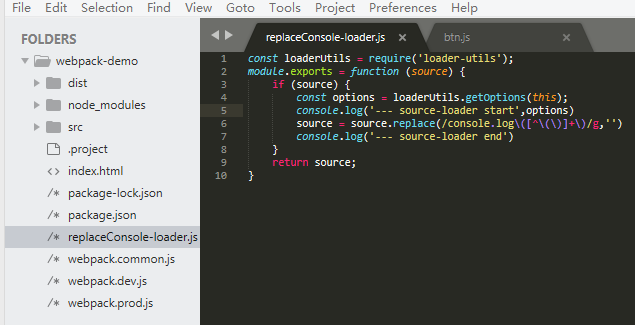
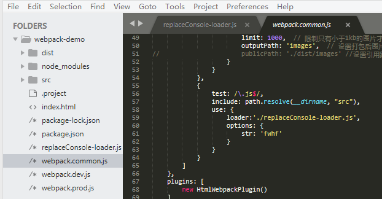
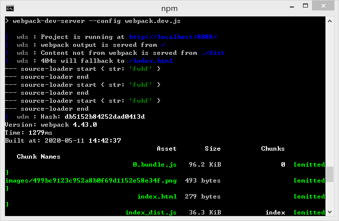
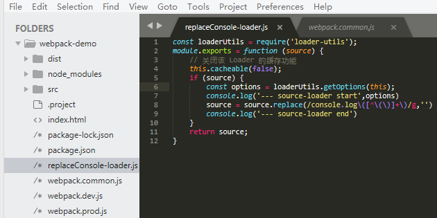
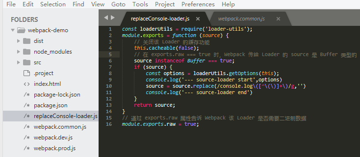
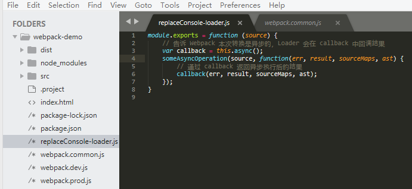
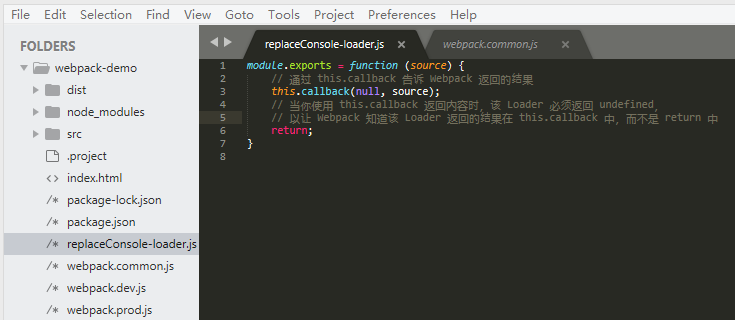

前言
继续沿用webpack4.x入门文章中的文件代码，本文将手写处理console.log的demo，我们希望在引入该loader时页面中的console.log被剔除。
1.起步
(1)在项目根目录创建一个js文件，命名为replaceConsole-loader.js。

(2)在webpack.common.js中配置该loader。

(3)运行【npm run dev】，当点击按钮时你会发现btn.js中的console.log()不再输出。

2.进阶
webpack还提供一些api供loader调用。
2.1获得loader的options。
2.1-(1)修改replaceConsole-loader.js。

2.1-(2)在webpack.common.js中配置该loader的options。

2.1-(3)运行【npm run dev】，在终端即可看到输出的{str:'fwhf'}。

2.2缓存加速。
在有些情况下，有些转换操作需要大量计算非常耗时，如果每次构建都重新执行重复的转换操作，构建将会变得非常缓慢。为此，webpack会默认缓存所有loader的处理结果，也就是说在需要被处理的文件或者其依赖的文件没有发生变化时， 是不会重新调用对应的loader去执行转换操作的。
如果想让webpack不缓存该loader的处理结果，可以这样：

2.3处理二进制数据。
在默认的情况下，webpack传给loader的原内容都是utf-8格式编码的字符串。 但有些场景下loader不是处理文本文件，而是处理二进制文件，例如file-loader，就需要webpack给loader传入二进制格式的数据。
如果想让webpack处理二进制数据，可以这样：

2.4同步与异步。
loader有同步和异步之分，比如你需要通过网络请求才能得出结果，如果采用同步的方式网络请求就会阻塞整个构建，导致构建非常缓慢。
如果想让webpack异步转换，可以这样：

2.5通过this.callback返回。
用法：
this.callback(
// 当无法转换原内容时，给 Webpack 返回一个 Error
err: Error | null,
// 原内容转换后的内容
content: string | Buffer,
// 用于把转换后的内容得出原内容的 Source Map，方便调试
sourceMap?: SourceMap,
// 如果本次转换为原内容生成了 AST 语法树，可以把这个 AST 返回，
// 以方便之后需要 AST 的 Loader 复用该 AST，以避免重复生成 AST，提升性能
abstractSyntaxTree?: AST
);

2.6其他api。
this.context：当前处理文件的所在目录，假如当前loader处理的文件是/src/main.js，则this.context就等于/src。
this.resource：当前处理文件的完整请求路径，包括querystring，例如/src/main.js?name=1。
this.resourcePath：当前处理文件的路径，例如/src/main.js。
this.resourceQuery：当前处理文件的querystring。
this.target：等于webpack配置中的Target。
this.loadModule：当loader在处理一个文件时，如果依赖其它文件的处理结果才能得出当前文件的结果时， 就可以通过this.loadModule(request: string, callback: function(err, source, sourceMap, module))去获得request对应文件的处理结果。
this.resolve：像require语句一样获得指定文件的完整路径，使用方法为resolve(context: string, request: string, callback: function(err, result: string))。
this.addDependency：给当前处理文件添加其依赖的文件，以便再其依赖的文件发生变化时，会重新调用loader处理该文件。使用方法为addDependency(file: string)。
this.addContextDependency：和addDependency类似，但addContextDependency是把整个目录加入到当前正在处理文件的依赖中。使用方法为addContextDependency(directory: string)。
this.clearDependencies：清除当前正在处理文件的所有依赖，使用方法为clearDependencies()。
this.emitFile：输出一个文件，使用方法为emitFile(name: string, content: Buffer|string, sourceMap: {...})。